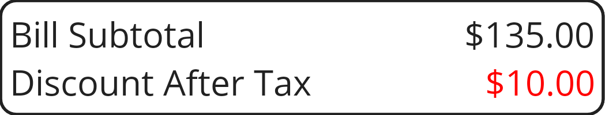

This is a list of the important areas on the Items page as seen from left to right, top to bottom. You can see an image of the page itself here. If you reached this page by tapping one of the active areas in the page image, the relevant heading should be highlighted below.
These appear in the toolbar at the top of the page or in the area revealed when you swipe on a participant line.
This icon, in the top left corner of the screen, allows you to show or collapse the flyout menu to navigate to other pages (navigate from the Items page to the Totals page by swiping left, back to the Items page by swiping right).
Changes filtering, either by cycling round all the participants, or if an item is selected, all the participants for the selected particular item. Before cycling round to the first item it turn off filtering altogether, so as to show the full list of items.
Adds a new item to the bill before the currently selected item and selects the newly added item so you can edit the description, amount and assignment to participants.
Deletes the selected item or items (you can Undo this if you do it by mistake). To delete a single item, you can also swipe left on that item.
Tap on the ellipsis to open a secondary menu containing a selection of commands.
This is the name of the current venue. Tapping the name shows the properties (tax and tip rates, for example) of the current bill, double tapping lets you select a new venue from your list.
This column will be blank for an unassigned item. For an item assigned to only one participant, it will contain a circled digit (1,2...8,9,0) corresponding to that participant. Items shared between multiple participants equally will show a plus sign, and those shared unequally will have an asterisk.
Tap to the left of an item name to remove the share assignments for that item if there are any. If there are no shares assigned yet, tapping here will share the item in the same proportion as the rest of the bill so far. You can repeat this once the whole bill has been allocated if you want to make it more representative. Alternatively, you can designate how an item is shared manually by using the buttons that show up once you select the item. For "comped" items (ones you are not expected to pay for), only the tip is shared since the other amounts (cost and tax) are zero.
Sometimes items will be "comped" by a restaurant, usually by way of an apology because something went wrong. Clicking in this column allows you to toggle the Comped status of an item, denoted by ☺ (a smiley face icon). Comped items are free, but are still considered when calculating the tip. If you don't want a comped item to contribute to the tip, just set the cost to zero, or delete the item altogether.
You can swipe individual items left to delete them (if you delete an item by mistake you can get it back until you exit the page). Tap on an item to make it the current focus so you can edit the name or price and/or assign it to one or more participants. This button disappears when you leave the page and you can no longer restore the current set of deleted items.
The Undelete button appears when there is at least one deleted item, tap it to restore the most recently deleted item. This button disappears when you leave the page.
The Undelete All button appears when there is more than one deleted item, tap it to restore all the deleted items. This button disappears when you leave the page and you can no longer restore the current set of deleted items.
When no item is selected a box containing the subtotal shows here. When an item is selected, some additional controls appear; you can see them here.
If no item is selected and "Discount After Tax" is set for this bill in the bill properties then the discount is not part of the subtotal and is shown on a separate line like this:
